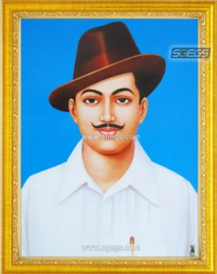

Bhagat Singh
Heartleft
Tribute
to the
Brave Son of mother India
Shaheed Bhagat Singh
on his 114th Birth Anniversary
(28 September 1907 - 23 March 1931)
He was One of the most Courageous Freedom Fighter.Revolutionary and True Patriot
He made the ultimate sacrifice to make India free from the British.His spirit of patriotism,nationalism & zeal is inspirational
Biography
- He was expert who transcended in both writings as well as reading languages such as Hindi, Punjabi, Gurumukhi, English, and Urdu at a very young age
- He was inclined towards the Marxist ideologies and the anarchist ideas that led to revolutionary contributions towards the movement.Fish prefer to be in groups,known as a shoal. A shoal can contain millions of fish.